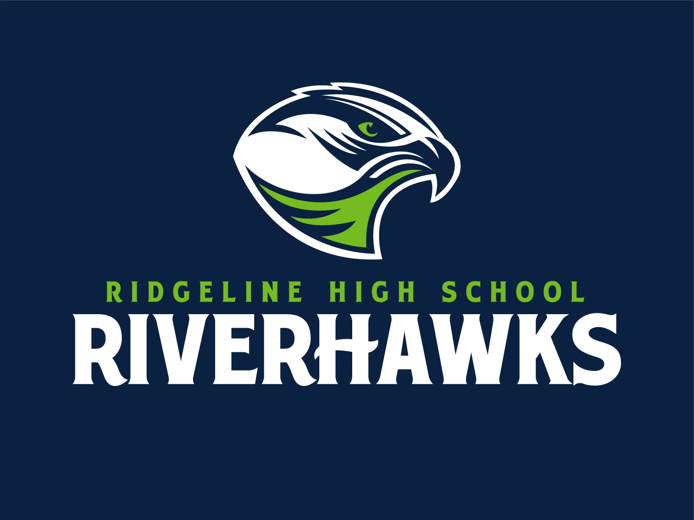

Collin's Resume
Education
- Brigham Young University
- Ridgeline High School

- Service Missionary, Spanish Speaking
Back to Top
Back to Top
- Student Body President 2019-2020
- Key Club Presidency 2018-2019
- Varsity Tennis
- Cross Country
1st place at So Cal Trail Ragnar Race
Back to Top
Applicable Skills
- Tableau
- SQL
- VBA
- Web Development (html/css)
Back to Top
Awards and Recognition
- Academic All-State
- Mathematics Sterling Scholar State Finalist
- SOAR Award
Highest academic achievement among all student athletes
Back to Top